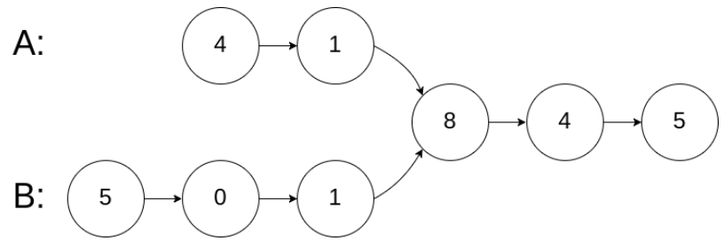
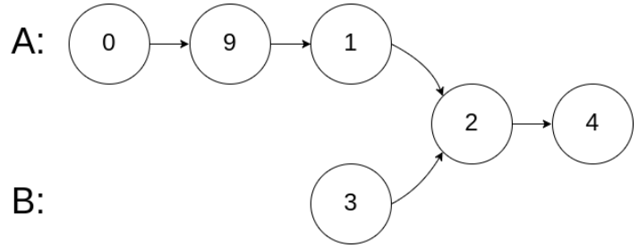
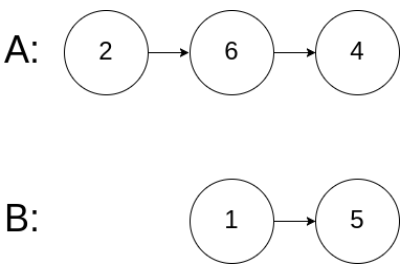

0160-intersection of two linked lists
Xiu Di / 2021-04-10
题目描述
编写一个程序，找到两个单链表相交的起始节点。
示例1:
 输入: intersectVal = 8, listA = [4,1,8,4,5], listB = [5,0,1,8,4,5], skipA = 2, skipB = 3
输出: Reference of the node with value = 8
输入解释: 相交节点的值为 8 （注意，如果两个链表相交则不能为 0）。链表A为[4,1,8,4,5]，链表B为[5,0,1,8,4,5]。在A中，相交节点前有2个节点；在B中，相交节点前有3个节点。
示例2:
 输入: intersectVal = 2, listA = [0,9,1,2,4], listB = [3,2,4], skipA = 3, skipB = 1
输出: Refernce of the node with value = 2
输入解释: 相交节点的值为 2 （注意，如果两个链表相交则不能为0）。链表A为[0,9,1,2,4]，链表B为[3,2,4]。在A中，相交节点前有3个节点；在B中，相交节点前有1个节点。
示例3:

输入: intersecVal = 0, listA = [2,6,4], listB = [1,5], skipA = 3, skipB = 2
输出: null
输入解释: 链表A为[2,6,4]，链表B为[1,5]。由于这两个链表不相交，所以intersectVal必须为0，而skipA和skipB可以是任意值。
解释: 这两个链表不相交，因此返回null。
注意:
- 如果两个链表没有交点，返回
null。- 在返回结果后，两个链表仍须保持原有的结构。
- 可假定整个链表结构中没有循环。
- 程序尽量满足O(n)时间复杂度，且仅用O(1)内存。
代码
哈希表法
# Definition for singly-linked list.
# class ListNode:
# def __init__(self, x):
# self.val = x
# self.next = None
class Solution:
def getIntersectionNode(self, headA: ListNode, headB: ListNode) -> ListNode:
hashTable = set()
curA, curB, res = headA, headB, None
while curA or curB:
if curA:
if curA in hashTable:
res = curA
break
else:
hashTable.add(curA)
curA = curA.next
if curB:
if curB in hashTable:
res = curB
break
else:
hashTable.add(curB)
curB = curB.next
return res
双指针法
class Solution:
def getIntersectionNode(self, headA: ListNode, headB: ListNode) -> ListNode:
curA, curB = headA, headB
while curA != curB:
curA = curA.next if curA else headB
curB = curB.next if curB else headA
return curA